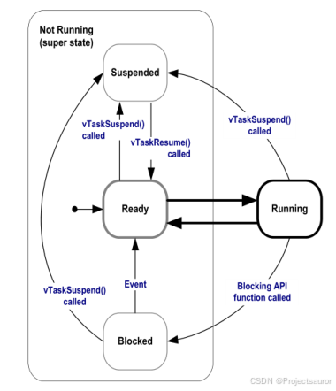
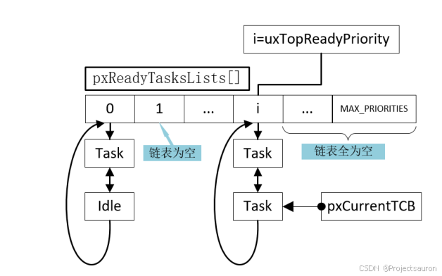
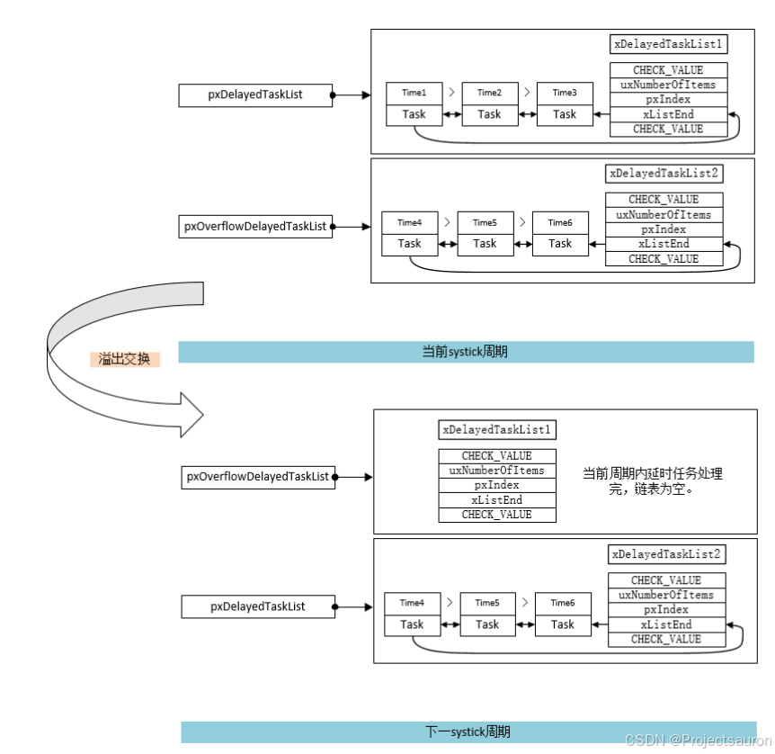
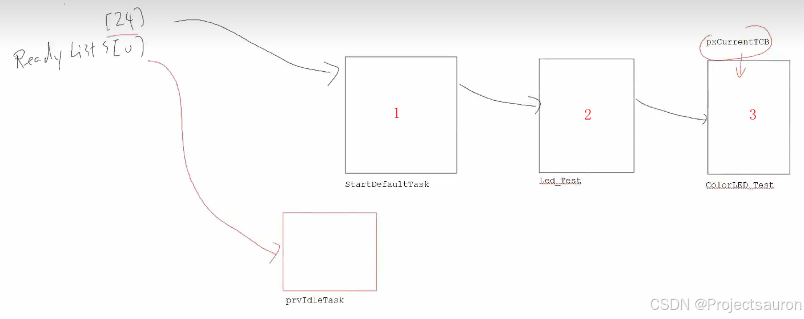

[toc]
FreeRTOS 本质上就是有很多的 List 组成，所以学习之前最好要对 FreeRTOS 中的链表要有所了解，可以参考：FreeRTOS 列表 List 源码解析
源码都在 task.c 中
一、基本结构和变量 1、TCB_t 首先来看一下一个任务的结构：
1 2 3 4 5 6 7 8 9 10 11 12 13 14 15 16 17 18 19 20 21 22 23 24 25 26 27 28 29 30 31 32 33 34 35 36 37 38 39 40 41 42 43 44 45 46 47 48 49 50 51 52 53 54 55 56 57 58 59 60 61 62 63 64 65 66 67 68 69 70 71 72 73 74 75 76 77 78 79 80 81 82 83 84 85 typedef struct tskTaskControlBlock { volatile StackType_t * pxTopOfStack; #if ( portUSING_MPU_WRAPPERS == 1 ) xMPU_SETTINGS xMPUSettings; #endif ListItem_t xStateListItem; ListItem_t xEventListItem; UBaseType_t uxPriority; StackType_t * pxStack; char pcTaskName[ configMAX_TASK_NAME_LEN ]; #if ( ( portSTACK_GROWTH > 0 ) || ( configRECORD_STACK_HIGH_ADDRESS == 1 ) ) StackType_t * pxEndOfStack; #endif #if ( portCRITICAL_NESTING_IN_TCB == 1 ) UBaseType_t uxCriticalNesting; #endif #if ( configUSE_TRACE_FACILITY == 1 ) UBaseType_t uxTCBNumber; UBaseType_t uxTaskNumber; #endif #if ( configUSE_MUTEXES == 1 ) UBaseType_t uxBasePriority; UBaseType_t uxMutexesHeld; #endif #if ( configUSE_APPLICATION_TASK_TAG == 1 ) TaskHookFunction_t pxTaskTag; #endif #if ( configNUM_THREAD_LOCAL_STORAGE_POINTERS > 0 ) void * pvThreadLocalStoragePointers[ configNUM_THREAD_LOCAL_STORAGE_POINTERS ]; #endif #if ( configGENERATE_RUN_TIME_STATS == 1 ) uint32_t ulRunTimeCounter; #endif #if ( configUSE_NEWLIB_REENTRANT == 1 ) struct _reent xNewLib_reent ; #endif #if ( configUSE_TASK_NOTIFICATIONS == 1 ) volatile uint32_t ulNotifiedValue[ configTASK_NOTIFICATION_ARRAY_ENTRIES ]; volatile uint8_t ucNotifyState[ configTASK_NOTIFICATION_ARRAY_ENTRIES ]; #endif #if ( tskSTATIC_AND_DYNAMIC_ALLOCATION_POSSIBLE != 0 ) uint8_t ucStaticallyAllocated; #endif #if ( INCLUDE_xTaskAbortDelay == 1 ) uint8_t ucDelayAborted; #endif #if ( configUSE_POSIX_ERRNO == 1 ) int iTaskErrno; #endif } tskTCB; typedef tskTCB TCB_t;
任务结构体被声明为 TCB_t，也就是 Task Control Block（任务控制块），熟悉这个任务控制块的结构有助于我们对后续源码的理解。
2、状态链表 FreeRTOS 中的任务一共有四种状态分别是运行状态（Running State Ready State Blocked State Suspended State
运行状态 ：正在执行的任务。就绪状态 ：等待获得执行权的任务。阻塞状态 ：直到某些条件达成才会重新进入就绪态等待获得执行权，否则不会执行的任务。挂起状态 ：除非被主动恢复，否则永远不会执行。

这四种状态分别对应着 pxCurrentTCB、pxReadyTasksLists、pxDelayedTaskList、xSuspendedTaskList 这四个变量。除运行状态外，任务处于其它状态时，都是通过将任务 TCB 中的 xStateListItem 挂到相应的链表下来表示的。
因此，FreeRTOS 中任务状态的切换本质上就是把任务项挂接到对应的链表下。
从源码中可以看到 pxReadyTasksLists、pxDelayedTaskList、xSuspendedTaskList 这四个变量的类型是链表数组，每一个下标就表示一个优先级，这样就把同一优先级的多个任务放在了一起，不同优先级是由不同的链表项连接。
进行任务切换的时候，调度器首先选择最高优先级的任务进行切换，而且具有相同优先级的任务会轮流执行。高优先级的任务未执行完低优先级的任务无法执行，因为低优先级无法抢占高优先级。
2.1 pxCurrentTCB 1 2 PRIVILEGED_DATA TCB_t * volatile pxCurrentTCB = NULL ;
当前运行的任务只可能有一个，因此 pxCurrentTCB 只是单个 TCB_t 指针。
2.2 pxReadyTasksLists 1 2 3 4 #define configMAX_PRIORITIES ( 10 ) PRIVILEGED_DATA static List_t pxReadyTasksLists[ configMAX_PRIORITIES ];
除此之外，还有一个变量 uxTopReadyPriority。其的定义如下
1 2 3 #define tskIDLE_PRIORITY ( ( UBaseType_t ) 0U ) PRIVILEGED_DATA static volatile UBaseType_t uxTopReadyPriority = tskIDLE_PRIORITY;
uxTopReadyPriority 存储的是有任务挂接的最高优先级。pxReadyTasksLists、pxCurrentTCB 和 uxTopReadyPriority 三者之间的关系可由以下的图来表示：

当使用时间片时，pxCurrentTCB 会在有任务挂接的最高优先级链表中遍历，以实现它们对处理器资源的分时共享。
2.3 pxDelayedTaskList 延时链表的作用不仅是用来处理任务的延时，任务的阻塞也是由它进行实现的。
1 2 3 4 PRIVILEGED_DATA static List_t xDelayedTaskList1; PRIVILEGED_DATA static List_t xDelayedTaskList2; PRIVILEGED_DATA static List_t * volatile pxDelayedTaskList; PRIVILEGED_DATA static List_t * volatile pxOverflowDelayedTaskList;
可以看到这里有两个 xDelayedTaskList：xDelayedTaskList1、xDelayedTaskList1。这是由于 pxDelayedTaskList 要处理和时间相关的信息，所以需要考虑到系统的 systick 溢出的处理。为了解决这一繁琐的问题，FreeRTOS 设计了两个延时链表和两个延时链表指针来处理溢出问题。
如下图，xDelayedTaskList1 和 xDelayedTaskList2 是两个实际链表，其中任务的排列顺序是按==退出阻塞时间==排序的，也就是链表的第一个成员任务是将最早退出阻塞，而最后一个成员任务是最后退出阻塞的。当系统的 systick 溢出时，pxDelayedTaskList 和pxOverflowDelayedTaskList 指向的链表地址也会随之交换一次，实现对溢出的处理。对于溢出的处理在后面会结合源码分析。以下是四个变量之间的关系：

与延时任务链表变量为 xNextTaskUnblockTime。其定义如下：
1 2 PRIVILEGED_DATA static volatile TickType_t xNextTaskUnblockTime = ( TickType_t ) 0U ;
2.4 xSuspendedTaskList 1 2 PRIVILEGED_DATA static List_t xSuspendedTaskList;
3、任务调度器相关 3.1 xSchedulerRunning 1 2 PRIVILEGED_DATA static volatile BaseType_t xSchedulerRunning = pdFALSE;
3.2 uxSchedulerSuspended 1 2 3 4 PRIVILEGED_DATA static volatile UBaseType_t uxSchedulerSuspended = ( UBaseType_t ) pdFALSE;
uxSchedulerSuspended 的作用是记录任务调度器被挂起的次数，当这个变量为 0（dFALSE）时，任务调度器不被挂起，任务切换正常执行，当这个变量大于 0 时代表任务调度器被挂起的次数。如果执行挂起任务调度器操作该变量值会增加，如果执行恢复任务调度器操作，该变量值会减一，直到它为 0 时才会真正的执行实际的调度器恢复操作，这样可以有效的提高执行效率。
3.3 xPendedTicks 1 PRIVILEGED_DATA static volatile TickType_t xPendedTicks = ( TickType_t ) 0U ;
任务调度器在被挂起期间，系统的时间，仍然是需要增加的。挂起期间漏掉的 systick 数目便会被存储在这个变量中，以用于恢复调度器时补上漏掉的 systick。
3.4 xPendingReadyList 1 2 PRIVILEGED_DATA static List_t xPendingReadyList;
这个链表中挂接的是在任务调度器挂起期间解除阻塞条件得到满足的阻塞任务，在任务调度器恢复工作后，这些任务会被移动到就绪链表组中，变为就绪状态。
4、任务删除相关 4.1 xTasksWaitingTermination 1 2 PRIVILEGED_DATA static List_t xTasksWaitingTermination;
当任务自己删除自己时，其是不能立刻自己释放自己所占用的内存等资源的，其需要将自己挂接到 xTasksWaitingTermination 这个链表下，然后让 IdleTask 来回收其所占用的资源。
4.2 uxDeletedTasksWaitingCleanUp 1 2 PRIVILEGED_DATA static volatile UBaseType_t uxDeletedTasksWaitingCleanUp = ( UBaseType_t ) 0U ;
4.3 xIdleTaskHandle 1 2 PRIVILEGED_DATA static TaskHandle_t xIdleTaskHandle = NULL ;
TaskHandle_t 本质上是指向任务 TCB 的指针，IdleTask 是任务调度器在启动时便自动创建的空闲任务，用于回收内存等操作，这个任务句柄指向 IdleTask。
5、系统信息相关 5.1 xTickCount 1 2 PRIVILEGED_DATA static volatile TickType_t xTickCount = ( TickType_t ) configINITIAL_TICK_COUNT;
5.2 xNumOfOverflows 1 2 PRIVILEGED_DATA static volatile BaseType_t xNumOfOverflows = ( BaseType_t ) 0 ;
5.3 uxTaskNumber 1 2 PRIVILEGED_DATA static UBaseType_t uxTaskNumber = ( UBaseType_t ) 0U ;
每创建一个任务，这个值便会增加一次，为每个任务生成一个唯一的序号，供调试工具使用。注意与 uxCurrentNumberOfTasks 区分。
5.4 uxCurrentNumberOfTasks 1 2 PRIVILEGED_DATA static volatile UBaseType_t uxCurrentNumberOfTasks = ( UBaseType_t ) 0U ;
二、任务的创建和删除 1、任务的创建 FreeRTOS 提供了以下4 种任务创建函数：
xTaskCreateStatic()：以静态内存分配的方式创建任务，也就是在编译时便要分配好 TCB 等所需要内存。xTaskCreateRestrictedStatic()：以静态内存分配的方式创建任务，需要 MPU。xTaskCreate()：以动态内存分配方式创建任务，需要提供 portMolloc() 函数的实现，在程序实际运行时分配 TCB 等所需要内存。xTaskCreateRestricted()：以动态内存分配方式创建任务，需要 MPU。
这里只讲 xTaskCreate()，其它函数有需要了解的请自行阅读源码。
1.1 xTaskCreate() 
创建任务的时候，我们就把它添加到对应就绪链表数组下的对应优先级下的链表的结尾，当我们运行一个任务（同一优先级时）的时候，它会先从链表的最后一项开始运行（因为 pxCurrentTCB 指向它），也就是先运行 3 号任务，然后是 1 号任务，最后是 2 号任务。
1 2 3 4 5 6 7 8 9 10 11 12 13 14 15 16 17 18 19 20 21 22 23 24 25 26 27 28 29 30 31 32 33 34 35 36 37 38 39 40 41 42 43 44 45 46 47 48 49 50 51 52 53 54 55 56 57 58 59 60 61 62 63 64 65 66 67 68 69 70 71 72 73 74 75 76 77 78 79 80 81 82 83 84 85 86 BaseType_t xTaskCreate ( TaskFunction_t pxTaskCode, const char * const pcName, const configSTACK_DEPTH_TYPE usStackDepth, void * const pvParameters, UBaseType_t uxPriority, TaskHandle_t * const pxCreatedTask ) { TCB_t * pxNewTCB; BaseType_t xReturn; #if ( portSTACK_GROWTH > 0 ) { pxNewTCB = ( TCB_t * ) pvPortMalloc( sizeof ( TCB_t ) ); if ( pxNewTCB != NULL ) { pxNewTCB->pxStack = ( StackType_t * ) pvPortMalloc( ( ( ( size_t ) usStackDepth ) * sizeof ( StackType_t ) ) ); if ( pxNewTCB->pxStack == NULL ) { vPortFree( pxNewTCB ); pxNewTCB = NULL ; } } } #else { StackType_t * pxStack; pxStack = pvPortMalloc( ( ( ( size_t ) usStackDepth ) * sizeof ( StackType_t ) ) ); if ( pxStack != NULL ) { pxNewTCB = ( TCB_t * ) pvPortMalloc( sizeof ( TCB_t ) ); if ( pxNewTCB != NULL ) { pxNewTCB->pxStack = pxStack; } else { vPortFree( pxStack ); } } else { pxNewTCB = NULL ; } } #endif if ( pxNewTCB != NULL ) { #if ( tskSTATIC_AND_DYNAMIC_ALLOCATION_POSSIBLE != 0 ) { pxNewTCB->ucStaticallyAllocated = tskDYNAMICALLY_ALLOCATED_STACK_AND_TCB; } #endif prvInitialiseNewTask( pxTaskCode, pcName, ( uint32_t ) usStackDepth, pvParameters, uxPriority, pxCreatedTask, pxNewTCB, NULL ); prvAddNewTaskToReadyList( pxNewTCB ); xReturn = pdPASS; } else { xReturn = errCOULD_NOT_ALLOCATE_REQUIRED_MEMORY; } return xReturn; }
代码内容很简单，大致做了这几件事：
初始化栈 - pvPortMalloc、pxNewTCB->pxStack = pxStack;
为任务分配内存空间、填充 TCB 结构体 - pvPortMalloc、prvInitialiseNewTask
将 TCB 加入到就绪列表中，并根据优先级进行任务切换 - prvAddNewTaskToReadyList
1.2 prvInitialiseNewTask 在 xTaskCreate 函数中调用了 prvInitialiseNewTask 函数来填充 TCB。
出于篇幅原因，这里把未启用宏的部分删去了
1 2 3 4 5 6 7 8 9 10 11 12 13 14 15 16 17 18 19 20 21 22 23 24 25 26 27 28 29 30 31 32 33 34 35 36 37 38 39 40 41 42 43 44 45 46 47 48 49 50 51 52 53 54 55 56 57 58 59 60 61 62 63 64 65 66 67 68 69 70 71 72 73 74 75 76 77 78 79 80 81 82 83 84 85 86 87 88 89 90 91 92 93 94 95 96 97 98 99 100 101 102 103 104 105 106 107 108 static void prvInitialiseNewTask ( TaskFunction_t pxTaskCode, const char * const pcName, const uint32_t ulStackDepth, void * const pvParameters, UBaseType_t uxPriority, TaskHandle_t * const pxCreatedTask, TCB_t * pxNewTCB, const MemoryRegion_t * const xRegions ) { StackType_t * pxTopOfStack; UBaseType_t x; #if ( tskSET_NEW_STACKS_TO_KNOWN_VALUE == 1 ) { ( void ) memset ( pxNewTCB->pxStack, ( int ) tskSTACK_FILL_BYTE, ( size_t ) ulStackDepth * sizeof ( StackType_t ) ); } #endif { pxTopOfStack = &( pxNewTCB->pxStack[ ulStackDepth - ( uint32_t ) 1 ] ); pxTopOfStack = ( StackType_t * ) ( ( ( portPOINTER_SIZE_TYPE ) pxTopOfStack ) & ( ~( ( portPOINTER_SIZE_TYPE ) portBYTE_ALIGNMENT_MASK ) ) ); configASSERT( ( ( ( portPOINTER_SIZE_TYPE ) pxTopOfStack & ( portPOINTER_SIZE_TYPE ) portBYTE_ALIGNMENT_MASK ) == 0UL ) ); } if ( pcName != NULL ) { for ( x = ( UBaseType_t ) 0 ; x < ( UBaseType_t ) configMAX_TASK_NAME_LEN; x++ ) { pxNewTCB->pcTaskName[ x ] = pcName[ x ]; if ( pcName[ x ] == ( char ) 0x00 ) { break ; } else { mtCOVERAGE_TEST_MARKER(); } } pxNewTCB->pcTaskName[ configMAX_TASK_NAME_LEN - 1 ] = '\0' ; } else { pxNewTCB->pcTaskName[ 0 ] = 0x00 ; } if ( uxPriority >= ( UBaseType_t ) configMAX_PRIORITIES ) { uxPriority = ( UBaseType_t ) configMAX_PRIORITIES - ( UBaseType_t ) 1U ; } else { mtCOVERAGE_TEST_MARKER(); } pxNewTCB->uxPriority = uxPriority; #if ( configUSE_MUTEXES == 1 ) { pxNewTCB->uxBasePriority = uxPriority; pxNewTCB->uxMutexesHeld = 0 ; } #endif vListInitialiseItem( &( pxNewTCB->xStateListItem ) ); vListInitialiseItem( &( pxNewTCB->xEventListItem ) ); listSET_LIST_ITEM_OWNER( &( pxNewTCB->xStateListItem ), pxNewTCB ); listSET_LIST_ITEM_VALUE( &( pxNewTCB->xEventListItem ), ( TickType_t ) configMAX_PRIORITIES - ( TickType_t ) uxPriority ); listSET_LIST_ITEM_OWNER( &( pxNewTCB->xEventListItem ), pxNewTCB ); #if ( configUSE_TASK_NOTIFICATIONS == 1 ) { memset ( ( void * ) &( pxNewTCB->ulNotifiedValue[ 0 ] ), 0x00 , sizeof ( pxNewTCB->ulNotifiedValue ) ); memset ( ( void * ) &( pxNewTCB->ucNotifyState[ 0 ] ), 0x00 , sizeof ( pxNewTCB->ucNotifyState ) ); } #endif pxNewTCB->pxTopOfStack = pxPortInitialiseStack( pxTopOfStack, pxTaskCode, pvParameters ); if ( pxCreatedTask != NULL ) { *pxCreatedTask = ( TaskHandle_t ) pxNewTCB; } else { mtCOVERAGE_TEST_MARKER(); } }
执行过程大致如下：
将栈值设定为特定值，以用于栈最高使用大小检测等功能
( void ) memset( pxNewTCB->pxStack, ( int ) tskSTACK_FILL_BYTE, ( size_t ) ulStackDepth * sizeof( StackType_t ) );
计算栈顶指针、栈底指针
pxTopOfStack = &( pxNewTCB->pxStack[ ulStackDepth - ( uint32_t ) 1 ] );pxTopOfStack = ( StackType_t * ) ( ( ( portPOINTER_SIZE_TYPE ) pxTopOfStack ) & ( ~( ( portPOINTER_SIZE_TYPE ) portBYTE_ALIGNMENT_MASK ) ) );
复制任务名、写入优先级等相关 TCB 结构体成员赋初值
pxNewTCB->pcTaskName[ x ] = pcName[ x ];
初始化链表项
对栈进行初始化
pxPortInitialiseStack 函数会按处理器规则填充任务私有栈的值，将任务的私有栈“伪装”成已经被调度过一次的样子。
1 2 3 4 5 6 7 8 9 10 11 12 13 14 15 16 17 18 19 20 21 22 23 24 25 26 27 28 29 30 31 StackType_t * pxPortInitialiseStack ( StackType_t * pxTopOfStack, TaskFunction_t pxCode, void * pvParameters ) { pxTopOfStack--; *pxTopOfStack = portINITIAL_XPSR; pxTopOfStack--; *pxTopOfStack = ( ( StackType_t ) pxCode ) & portSTART_ADDRESS_MASK; pxTopOfStack--; *pxTopOfStack = ( StackType_t ) prvTaskExitError; pxTopOfStack -= 5 ; *pxTopOfStack = ( StackType_t ) pvParameters; pxTopOfStack--; *pxTopOfStack = portINITIAL_EXC_RETURN; pxTopOfStack -= 8 ; return pxTopOfStack; }
注意看，这里初始化栈的时候，把 LR 的值设为了 prvTaskExitError：
1 2 3 4 5 6 7 8 9 10 11 12 13 14 static void prvTaskExitError ( void ) { configASSERT( uxCriticalNesting == ~0UL ); portDISABLE_INTERRUPTS(); for ( ; ; ) { } }
也就是一个死循环。所以说，如果我们自己写一个任务处理函数的时候，如果不是死循环的话（且没有经过特殊的处理），最终就会执行到这里，所有的任务都无法再执行，也就是你之前遇到死机的可能的原因之一。
当我们想让任务退出的时候，必须要杀死这个任务，这就会用到下面会将到的 vTaskDelete()。
1.3 prvAddNewTaskToReadyList 在 xTaskCreate 函数中，紧接着调用了 prvAddNewTaskToReadyList 来使任务处于就绪态和任务切换：
1 2 3 4 5 6 7 8 9 10 11 12 13 14 15 16 17 18 19 20 21 22 23 24 25 26 27 28 29 30 31 32 33 34 35 36 37 38 39 40 41 42 43 44 45 46 47 48 49 50 51 52 53 54 55 56 57 58 59 60 61 62 63 64 65 66 67 68 69 70 71 72 73 74 75 76 77 78 79 static void prvAddNewTaskToReadyList ( TCB_t * pxNewTCB ) { taskENTER_CRITICAL(); { uxCurrentNumberOfTasks++; if ( pxCurrentTCB == NULL ) { pxCurrentTCB = pxNewTCB; if ( uxCurrentNumberOfTasks == ( UBaseType_t ) 1 ) { prvInitialiseTaskLists(); } else { mtCOVERAGE_TEST_MARKER(); } } else { if ( xSchedulerRunning == pdFALSE ) { if ( pxCurrentTCB->uxPriority <= pxNewTCB->uxPriority ) { pxCurrentTCB = pxNewTCB; } else { mtCOVERAGE_TEST_MARKER(); } } else { mtCOVERAGE_TEST_MARKER(); } } uxTaskNumber++; #if ( configUSE_TRACE_FACILITY == 1 ) { pxNewTCB->uxTCBNumber = uxTaskNumber; } #endif traceTASK_CREATE( pxNewTCB ); prvAddTaskToReadyList( pxNewTCB ); portSETUP_TCB( pxNewTCB ); } taskEXIT_CRITICAL(); if ( xSchedulerRunning != pdFALSE ) { if ( pxCurrentTCB->uxPriority < pxNewTCB->uxPriority ) { taskYIELD_IF_USING_PREEMPTION(); } else { mtCOVERAGE_TEST_MARKER(); } } else { mtCOVERAGE_TEST_MARKER(); } }
该函数大致做了如下工作：
记录当前任务数量
uxCurrentNumberOfTasks++;
将任务添加到就绪链表中
prvAddTaskToReadyList( pxNewTCB );
将任务插入就绪链表中时采用的宏 prvAddTaskToReadyList() 相关代码如下：
1 2 3 4 5 6 7 8 9 10 11 12 13 14 15 #define prvAddTaskToReadyList( pxTCB ) \ traceMOVED_TASK_TO_READY_STATE( pxTCB ); \ taskRECORD_READY_PRIORITY( ( pxTCB )->uxPriority ); \ vListInsertEnd( &( pxReadyTasksLists[ ( pxTCB )->uxPriority ] ), &( ( pxTCB )->xStateListItem ) ); \ tracePOST_MOVED_TASK_TO_READY_STATE( pxTCB ) #define taskRECORD_READY_PRIORITY( uxPriority ) portRECORD_READY_PRIORITY( uxPriority, uxTopReadyPriority ) #define portRECORD_READY_PRIORITY( uxPriority, uxReadyPriorities ) ( uxReadyPriorities ) |= ( 1UL << ( uxPriority ) )
首先通过 taskRECORD_READY_PRIORITY( ( pxTCB )->uxPriority ); 来获取最高优先级的就绪任务的优先级，然后调用 vListInsertEnd( &( pxReadyTasksLists[ ( pxTCB )->uxPriority ] ), &( ( pxTCB )->xStateListItem ) );，根据优先级，将任务放在对应优先级的就绪列表项后面。
根据新加入的优先级判断是否需要进行一次任务切换
taskYIELD_IF_USING_PREEMPTION();
该函数本质上就是 port.c 文件中的 vPortGenerateSimulatedInterrupt() 函数，该函数通过产生一个模拟中断来让调度器进行一次任务切换，
至此，xTaskCreate() 的执行过程就结束了，一个任务就此创建好了。
2、任务删除 2.1 vTaskDelete 我们通过调用 vTaskDelete() 函数来删除一个任务，该函数有两个使用场景：
任务自己删除自己（传入参数为 NULL）
当前任务删除其它任务（传入任务句柄）1 2 3 4 5 6 7 8 9 10 11 12 13 14 15 16 17 18 19 20 21 22 23 24 25 26 27 28 29 30 31 32 33 34 35 36 37 38 39 40 41 42 43 44 45 46 47 48 49 50 51 52 53 54 55 56 57 58 59 60 61 62 63 64 65 66 67 68 69 70 71 72 73 74 75 76 77 78 79 80 81 82 83 84 85 86 87 void vTaskDelete ( TaskHandle_t xTaskToDelete ) { TCB_t * pxTCB; taskENTER_CRITICAL(); { pxTCB = prvGetTCBFromHandle( xTaskToDelete ); if ( uxListRemove( &( pxTCB->xStateListItem ) ) == ( UBaseType_t ) 0 ) { taskRESET_READY_PRIORITY( pxTCB->uxPriority ); } else { mtCOVERAGE_TEST_MARKER(); } if ( listLIST_ITEM_CONTAINER( &( pxTCB->xEventListItem ) ) != NULL ) { ( void ) uxListRemove( &( pxTCB->xEventListItem ) ); } else { mtCOVERAGE_TEST_MARKER(); } uxTaskNumber++; if ( pxTCB == pxCurrentTCB ) { vListInsertEnd( &xTasksWaitingTermination, &( pxTCB->xStateListItem ) ); ++uxDeletedTasksWaitingCleanUp; traceTASK_DELETE( pxTCB ); portPRE_TASK_DELETE_HOOK( pxTCB, &xYieldPending ); } else { --uxCurrentNumberOfTasks; traceTASK_DELETE( pxTCB ); prvResetNextTaskUnblockTime(); } } taskEXIT_CRITICAL(); if ( pxTCB != pxCurrentTCB ) { prvDeleteTCB( pxTCB ); } if ( xSchedulerRunning != pdFALSE ) { if ( pxTCB == pxCurrentTCB ) { configASSERT( uxSchedulerSuspended == 0 ); portYIELD_WITHIN_API(); } else { mtCOVERAGE_TEST_MARKER(); } } }
我们首先通过如下宏来判断传入的是 NULL 还是任务句柄：
1 #define prvGetTCBFromHandle(pxHandle) ( ( ( pxHandle ) == NULL ) ? pxCurrentTCB : ( pxHandle ) )
当我们用 vTaskDelete() 来删除其它任务时，所需要进行的工作步骤如下：
将待删除任务从相关的状态链表中删除，设置相关参数，保证被删除的任务不会再次获得处理器使用权。
uxListRemove( &( pxTCB->xStateListItem ) )
将待删除任务从其相关的事件链表中删除，设置相关参数，保证被删除的任务不会再次获得处理器使用权。
uxListRemove( &( pxTCB->xEventListItem ) )
更改当前任务数目。
--uxCurrentNumberOfTasks;
直接释放内存空间。
1 2 3 4 5 6 7 8 9 10 11 static void prvDeleteTCB ( TCB_t * pxTCB ) { portCLEAN_UP_TCB( pxTCB ); vPortFree( pxTCB->pxStack ); vPortFree( pxTCB ); }
portCLEAN_UP_TCB 本质上就是 port.c 中的函数 vPortDeleteThread：
1 2 3 4 5 6 7 8 9 10 11 12 13 14 15 16 17 18 19 20 21 22 23 24 25 26 27 28 29 void vPortDeleteThread ( void *pvTaskToDelete ) { ThreadState_t *pxThreadState; uint32_t ulErrorCode; ( void ) ulErrorCode; pxThreadState = ( ThreadState_t * ) ( *( size_t *) pvTaskToDelete ); if ( pxThreadState->pvThread != NULL ) { WaitForSingleObject( pvInterruptEventMutex, INFINITE ); ulErrorCode = TerminateThread( pxThreadState->pvThread, 0 ); configASSERT( ulErrorCode ); ulErrorCode = CloseHandle( pxThreadState->pvThread ); configASSERT( ulErrorCode ); ReleaseMutex( pvInterruptEventMutex ); } }
重新计算下个任务解除阻塞的时间。
prvResetNextTaskUnblockTime();
1 2 3 4 5 6 7 8 9 10 11 12 13 14 15 16 17 static void prvResetNextTaskUnblockTime ( void ) { if ( listLIST_IS_EMPTY( pxDelayedTaskList ) != pdFALSE ) { xNextTaskUnblockTime = portMAX_DELAY; } else { xNextTaskUnblockTime = listGET_ITEM_VALUE_OF_HEAD_ENTRY( pxDelayedTaskList ); } } #define listGET_ITEM_VALUE_OF_HEAD_ENTRY( pxList ) ( ( ( pxList )->xListEnd ).pxNext->xItemValue )
FreeRTOS 系统中所有的阻塞都是由将任务按解除阻塞时间升序挂接到延时任务链表 pxDelayedTaskList 中实现的，因此 prvResetNextTaskUnblockTime() 实际上只是读取 pxDelayedTaskList 下的第一个任务解除阻塞的时间，将其赋值给 xNextTaskUnblockTime 而已，如果 pxDelayedTaskList 为空，那么 xNextTaskUnblockTime 将会被赋值为 portMAX_DELAY。
当任务是自己删除自己时，上述步骤的第4 步将有所变化。当前任务仍在运行中，此时直接释放其占用的内存可能导致运行错误，因此需要等待其退出运行状态时才能安全的对其占用的内存进行释放。此时上述的步骤 4 替换为以下两步：
将待删除任务挂接到待终止任务链表 xTasksWaitingTermination 中
vListInsertEnd( &xTasksWaitingTermination, &( pxTCB->xStateListItem ) );
增加删除待清理任务数 uxDeletedTasksWaitingCleanUp
++uxDeletedTasksWaitingCleanUp;
在前面讲创建任务的时候，提到会创建一个空闲任务，空闲任务就会来释放掉这个任务所申请的内存（TCB、栈等），相当于 Linux 下的 init 守护进程。但是空闲任务的优先级是 0，如果就绪列表一直不为空，那空闲任务该如何得到执行？那就是用 vTaskDelay，它会把任务从就绪链表移动到延迟列表，让出 CPU 资源，这样空闲任务就可以得到执行。
1 2 3 4 5 6 7 8 9 10 11 12 13 14 15 16 17 18 19 20 21 22 23 24 25 26 27 28 29 30 31 32 33 34 35 void vTaskDelay ( const TickType_t xTicksToDelay ) { BaseType_t xAlreadyYielded = pdFALSE; if ( xTicksToDelay > ( TickType_t ) 0U ) { configASSERT( uxSchedulerSuspended == 0 ); vTaskSuspendAll(); { traceTASK_DELAY(); prvAddCurrentTaskToDelayedList( xTicksToDelay, pdFALSE ); } xAlreadyYielded = xTaskResumeAll(); } else { mtCOVERAGE_TEST_MARKER(); } if ( xAlreadyYielded == pdFALSE ) { portYIELD_WITHIN_API(); } else { mtCOVERAGE_TEST_MARKER(); } }
三、任务切换 任务切换的目的是保证当前具有最高优先级的就绪任务获得处理器的使用权。在进行任务切换时，首先要找到具有最高优先级的就绪任务，如果该任务不是当前正在运行的任务，需要先保存当前运行任务的堆栈，并将具有最高优先级的就绪任务堆栈恢复到处理器的堆栈中进行运行。
1、vTaskSwitchContext 通过 vTaskSwitchContext 可以实现任务上下文切换：
删去了不必要的宏
1 2 3 4 5 6 7 8 9 10 11 12 13 14 15 16 17 18 19 20 21 22 void vTaskSwitchContext ( void ) { if ( uxSchedulerSuspended != ( UBaseType_t ) pdFALSE ) { xYieldPending = pdTRUE; } else { xYieldPending = pdFALSE; traceTASK_SWITCHED_OUT(); taskCHECK_FOR_STACK_OVERFLOW(); taskSELECT_HIGHEST_PRIORITY_TASK(); traceTASK_SWITCHED_IN(); } }
1.1 taskSELECT_HIGHEST_PRIORITY_TASK 调用 taskSELECT_HIGHEST_PRIORITY_TASK 可以根据当前就绪列表中任务的最高优先级 uxTopReadyPriority 获得要运行任务：
1 2 3 4 5 6 7 8 9 10 11 12 #define taskSELECT_HIGHEST_PRIORITY_TASK() \ { \ UBaseType_t uxTopPriority; \ \ \ portGET_HIGHEST_PRIORITY( uxTopPriority, uxTopReadyPriority ); \ configASSERT( listCURRENT_LIST_LENGTH( &( pxReadyTasksLists[ uxTopPriority ] ) ) > 0 ); \ listGET_OWNER_OF_NEXT_ENTRY( pxCurrentTCB, &( pxReadyTasksLists[ uxTopPriority ] ) ); \ }
其中出现的宏定义如下：
1 2 3 4 5 6 7 8 9 10 11 12 13 14 15 16 17 18 19 20 #define portGET_HIGHEST_PRIORITY( uxTopPriority, uxReadyPriorities ) \ __asm volatile( "bsr %1, %0\n\t" \ :"=r" (uxTopPriority) : "rm" (uxReadyPriorities) : "cc" ) #define listCURRENT_LIST_LENGTH( pxList ) ( ( pxList )->uxNumberOfItems ) #define listGET_OWNER_OF_NEXT_ENTRY( pxTCB, pxList ) \ { \ List_t * const pxConstList = ( pxList ); \ \ \ ( pxConstList )->pxIndex = ( pxConstList )->pxIndex->pxNext; \ if ( ( void * ) ( pxConstList )->pxIndex == ( void * ) &( ( pxConstList )->xListEnd ) ) \ { \ ( pxConstList )->pxIndex = ( pxConstList )->pxIndex->pxNext; \ } \ ( pxTCB ) = ( pxConstList )->pxIndex->pvOwner; \ }
2、进入任务切换的方式 FreeRTOS 进入任务切换的方式有以下两种
在 xPortSysTickHandler() 中断中进入，也就是在系统 Systick 增加时，根据情况进入任务切换。
手动调用 portYIELD_WITHIN_API() 或 taskYIELD_IF_USING_PREEMPTION()（在启用抢占模式的情况下其和 portYIELD_WITHIN_API 一样，非抢占模式下，其没有任何作用）直接进行一次任务切换。
2.1 xPortSysTickHandler xPortSysTickHandler 其实就是 SysTick_Handler，在 FreeRTOSConfig.h 文件中有：
1 2 3 #define vPortSVCHandler SVC_Handler #define xPortPendSVHandler PendSV_Handler #define xPortSysTickHandler SysTick_Handler
在 portable/RVDS/ARM_CM4F/port.c 实现了这个函数：
1 2 3 4 5 6 7 8 9 10 11 12 13 14 15 16 17 18 19 20 21 22 23 void xPortSysTickHandler ( void ) { vPortRaiseBASEPRI(); { if ( xTaskIncrementTick() != pdFALSE ) { portNVIC_INT_CTRL_REG = portNVIC_PENDSVSET_BIT; } } vPortClearBASEPRIFromISR(); }
xTaskIncrementTick() 函数的主要功能是在在任务调度器工作时修改 Systick 的值，并根据 Systick 值的变化判断是否需要进行一次任务切换动作；在任务调度器被挂起时，其会记录任务调度器挂起期间漏掉的 Systick 数，一旦任务调度器恢复运行，任务调度器会补上漏掉的 Systick 和相应的任务切换动作在任务调度器工作时，当以下两种情况发生时，xTaskIncrementTick() 将返回 pdTRUE，以触发一次 PendSV 中断，以进行任务切换动作：
当前时刻有任务需要退出阻塞状态
启用时间片模式，当前优先级下有多个任务，需要共享使用权。
2.2 portYIELD_WITHIN_API 这个 API 在前面讲 vTaskCreate 和 vTaskDelete 的时候已经见过了（可能名称不一样，因为又用 #define 封装了几次），这里列出源码（port.c）：
1 2 3 4 5 6 7 8 9 10 11 12 13 14 15 16 17 18 19 20 21 22 23 24 25 26 27 28 29 30 31 32 33 34 void vPortGenerateSimulatedInterrupt ( uint32_t ulInterruptNumber ) { ThreadState_t *pxThreadState = ( ThreadState_t *) *( ( size_t * ) pxCurrentTCB ); configASSERT( xPortRunning ); if ( ( ulInterruptNumber < portMAX_INTERRUPTS ) && ( pvInterruptEventMutex != NULL ) ) { WaitForSingleObject( pvInterruptEventMutex, INFINITE ); ulPendingInterrupts |= ( 1 << ulInterruptNumber ); if ( ulCriticalNesting == portNO_CRITICAL_NESTING ) { SetEvent( pvInterruptEvent ); ResetEvent( pxThreadState->pvYieldEvent ); } ReleaseMutex( pvInterruptEventMutex ); if ( ulCriticalNesting == portNO_CRITICAL_NESTING ) { WaitForSingleObject( pxThreadState->pvYieldEvent, INFINITE ); } } }
2.3 xPortPendSVHandler 前面也看到了，当触发 PendSV 中断的时候，就会调用 xPortPendSVHandler，也就是 PendSV_Handler，下面是它的实现（port.c），通过它我们就可以清楚任务是如何进行上下文切换的。
1 2 3 4 5 6 7 8 9 10 11 12 13 14 15 16 17 18 19 20 21 22 23 24 25 26 27 28 29 30 31 32 33 34 35 36 37 38 39 40 41 42 43 44 45 46 47 48 49 50 51 52 53 54 55 56 57 58 59 60 61 62 63 64 65 66 67 68 69 70 71 72 73 74 75 76 77 78 79 80 81 82 83 84 85 86 87 88 89 90 91 92 93 94 95 96 97 98 99 100 __asm void xPortPendSVHandler ( void ) { extern uxCriticalNesting; extern pxCurrentTCB; extern vTaskSwitchContext; PRESERVE8 mrs r0, psp isb ldr r3, =pxCurrentTCB ldr r2, [ r3 ] tst r14, #0x10 it eq vstmdbeq r0!, {s16-s31} stmdb r0!, {r4-r11, r14} str r0, [ r2 ] stmdb sp!, {r0, r3} mov r0, # configMAX_SYSCALL_INTERRUPT_PRIORITY msr basepri, r0 dsb isb bl vTaskSwitchContext mov r0, # 0 msr basepri, r0 ldmia sp!, {r0, r3} ldr r1, [ r3 ] ldr r0, [ r1 ] ldmia r0!, {r4-r11, r14} tst r14, # 0x10 it eq vldmiaeq r0!, {s16-s31} msr psp, r0 isb #ifdef WORKAROUND_PMU_CM001 #if WORKAROUND_PMU_CM001 == 1 push { r14 } pop { pc } nop #endif #endif bx r14 }
注意，在任务中使用的是 PSP，而处理器复位后默认使用的是 MSP 指针。这是因为任务调度器在启动时会调用 prvStartFirstTask() 函数，这个函数也是一段汇编代码，它的主要工作就是复位 MSP，开中断和异常，并且触发一次 SVC 中断，进行第一次任务的加载，其内容如下：
1 2 3 4 5 6 7 8 9 10 11 12 13 14 15 16 17 18 19 20 21 22 23 24 25 26 27 __asm void prvStartFirstTask ( void ) { PRESERVE8 ldr r0, =0xE000ED08 ldr r0, [ r0 ] ldr r0, [ r0 ] msr msp, r0 mov r0, #0 msr control, r0 cpsie i cpsie f dsb isb svc 0 nop nop }
SVC 异常服务函数里的代码如下：
1 2 3 4 5 6 7 8 9 10 11 12 13 14 15 16 17 18 __asm void vPortSVCHandler ( void ) { PRESERVE8 ldr r3, = pxCurrentTCB ldr r1, [ r3 ] ldr r0, [ r1 ] ldmia r0 !, {r4-r11,r14} msr psp, r0 isb mov r0, # 0 msr basepri, r0 bx r14 }
在最后一步， SVC 异常服务函数修改了 r14 的值，正是修改该值使得处理器在退出中断后运行任务函数时进入线程模式并使用 PSP 栈指针。
四、任务调度器 1、启动 1.1 vTaskStartScheduler() FreeRTOS 中任务调度器的启动由 vTaskStartScheduler() 函数实现，此函数被调用后，OS 将接手处理器的管理权，它主要有以下几个步骤：
创建空闲任务、定时器任务。
初始化下一次解除阻塞时间，系统 tick 初始值，运行状态等变量。
调用 xPortStartScheduler() 函数启动调度器
1 2 3 4 5 6 7 8 9 10 11 12 13 14 15 16 17 18 19 20 21 22 23 24 25 26 27 28 29 30 31 32 33 34 35 36 37 38 39 40 41 42 43 44 45 46 47 48 49 50 51 52 53 54 55 56 57 58 59 60 61 62 63 64 65 66 67 68 69 70 71 72 73 74 75 76 77 78 79 80 81 void vTaskStartScheduler ( void ) { BaseType_t xReturn; { xReturn = xTaskCreate( prvIdleTask, configIDLE_TASK_NAME, configMINIMAL_STACK_SIZE, ( void * ) NULL , portPRIVILEGE_BIT, &xIdleTaskHandle ); } #if ( configUSE_TIMERS == 1 ) { if ( xReturn == pdPASS ) { xReturn = xTimerCreateTimerTask(); } else { mtCOVERAGE_TEST_MARKER(); } } #endif if ( xReturn == pdPASS ) { #ifdef FREERTOS_TASKS_C_ADDITIONS_INIT { freertos_tasks_c_additions_init(); } #endif portDISABLE_INTERRUPTS(); xNextTaskUnblockTime = portMAX_DELAY; xSchedulerRunning = pdTRUE; xTickCount = ( TickType_t ) configINITIAL_TICK_COUNT; portCONFIGURE_TIMER_FOR_RUN_TIME_STATS(); traceTASK_SWITCHED_IN(); if ( xPortStartScheduler() != pdFALSE ) { } else { } } else { configASSERT( xReturn != errCOULD_NOT_ALLOCATE_REQUIRED_MEMORY ); } ( void ) xIdleTaskHandle; ( void ) uxTopUsedPriority; }
1.2 xPortStartScheduler 这个函数是与平台相关的，根据 arm-cm3 的移植文件来看（在目录 portable/RVDS/ARM_CM4F 下），它主要的工作是设置上下文切换中断和Systick 中断，启动定时器为系统提供 Systick，最终调用 prvStartFirstTask() （前面已经介绍过）来启动第一个任务。
1 2 3 4 5 6 7 8 9 10 11 12 13 14 15 16 17 18 19 20 21 22 23 24 25 26 27 28 29 30 31 32 33 34 35 36 37 38 39 40 41 42 43 44 45 46 47 48 49 50 51 52 53 54 55 56 57 58 59 60 61 62 63 64 65 66 67 68 69 70 71 72 73 74 75 76 77 78 79 80 81 82 83 84 85 86 87 88 89 90 91 92 93 94 95 96 97 98 99 100 101 102 103 BaseType_t xPortStartScheduler ( void ) { configASSERT( configMAX_SYSCALL_INTERRUPT_PRIORITY ); configASSERT( portCPUID != portCORTEX_M7_r0p1_ID ); configASSERT( portCPUID != portCORTEX_M7_r0p0_ID ); #if ( configASSERT_DEFINED == 1 ) { volatile uint32_t ulOriginalPriority; volatile uint8_t * const pucFirstUserPriorityRegister = ( uint8_t * ) ( portNVIC_IP_REGISTERS_OFFSET_16 + portFIRST_USER_INTERRUPT_NUMBER ); volatile uint8_t ucMaxPriorityValue; ulOriginalPriority = *pucFirstUserPriorityRegister; *pucFirstUserPriorityRegister = portMAX_8_BIT_VALUE; ucMaxPriorityValue = *pucFirstUserPriorityRegister; configASSERT( ucMaxPriorityValue == ( configKERNEL_INTERRUPT_PRIORITY & ucMaxPriorityValue ) ); ucMaxSysCallPriority = configMAX_SYSCALL_INTERRUPT_PRIORITY & ucMaxPriorityValue; ulMaxPRIGROUPValue = portMAX_PRIGROUP_BITS; while ( ( ucMaxPriorityValue & portTOP_BIT_OF_BYTE ) == portTOP_BIT_OF_BYTE ) { ulMaxPRIGROUPValue--; ucMaxPriorityValue <<= ( uint8_t ) 0x01 ; } #ifdef __NVIC_PRIO_BITS { configASSERT( ( portMAX_PRIGROUP_BITS - ulMaxPRIGROUPValue ) == __NVIC_PRIO_BITS ); } #endif #ifdef configPRIO_BITS { configASSERT( ( portMAX_PRIGROUP_BITS - ulMaxPRIGROUPValue ) == configPRIO_BITS ); } #endif ulMaxPRIGROUPValue <<= portPRIGROUP_SHIFT; ulMaxPRIGROUPValue &= portPRIORITY_GROUP_MASK; *pucFirstUserPriorityRegister = ulOriginalPriority; } #endif portNVIC_SHPR3_REG |= portNVIC_PENDSV_PRI; portNVIC_SHPR3_REG |= portNVIC_SYSTICK_PRI; vPortSetupTimerInterrupt(); uxCriticalNesting = 0 ; prvEnableVFP(); *( portFPCCR ) |= portASPEN_AND_LSPEN_BITS; prvStartFirstTask(); return 0 ; }
2、结束 2.1 vTaskEndScheduler 任务调度器的关闭由 vTaskEndScheduler() 函数实现，此函数调用后 OS 将停止工作。它的实现就非常简单了，只有三行：
1 2 3 4 5 6 7 8 9 void vTaskEndScheduler ( void ) { portDISABLE_INTERRUPTS(); xSchedulerRunning = pdFALSE; vPortEndScheduler(); }